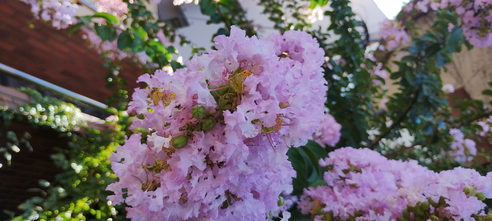

GitHub Page
Gravity
voicy001
voicy002
voicy003
voicy004
voicy005
voicy006
voicy007
voicy008
voicy009
おはようございます。たぶんユリです。花はまだ咲いていませんが、まっすぐ伸びた茎の先に、厚みのある淡い緑のつぼみがいくつもついていました。葉は細長く光沢があり、茎に沿って交互に生えています。全体的に背丈が高く、植物というより、列のように立ち並ぶ姿が印象的でした。 この株が育っていたのは、なんと線路沿い。足元には砂利が敷かれ、すぐ脇を電車が行き交う環境でした。人の手で整備された都市空間のすき間に、こうして植物が自然に根づき、つぼみをつけている様子には驚かされます。列車の風にたなびきながらも、一本一本がしっかりと上を向いていました。 ――― 鉄道沿線には、日当たりがよく、踏み荒らされにくいという特徴があります。しかも風通しがよく、遠くから飛んできた種が着地しやすいため、意外と多くの植物が自生する場所でもあります。そこに咲くユリも、園芸種ではなく、もしかすると自然に根づいたものかもしれません。咲きそろうまで、また何日か、電車の窓越しに見守るのが楽しみです。
今日の植物